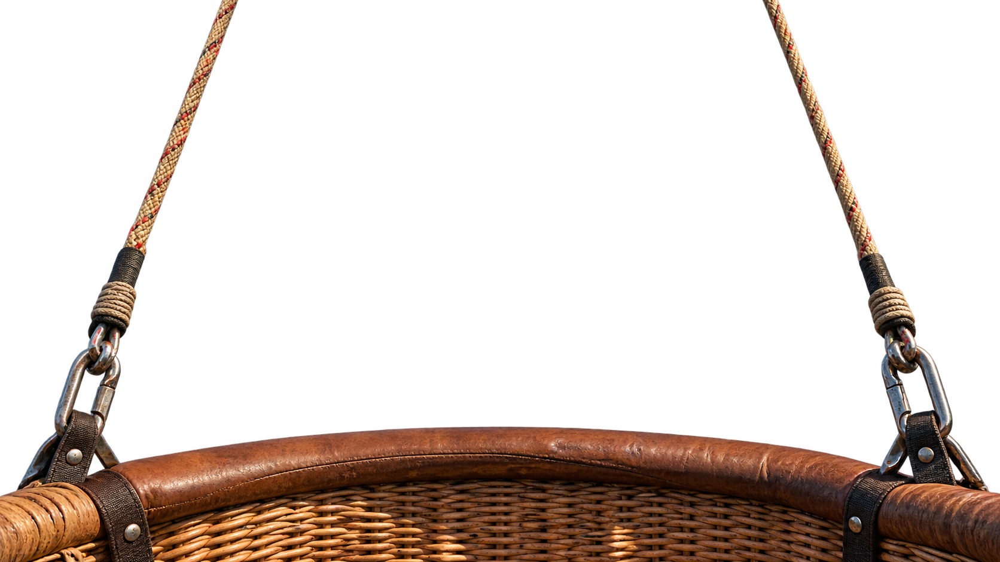

Select a launch point
WORLD POSITION

BALLOON · LOW-ALTITUDE VIEW
Click anywhere on the map to choose a launch point
Choose your launch point
Wind: waiting for location

Choose a place on Earth and let the wind decide the journey.